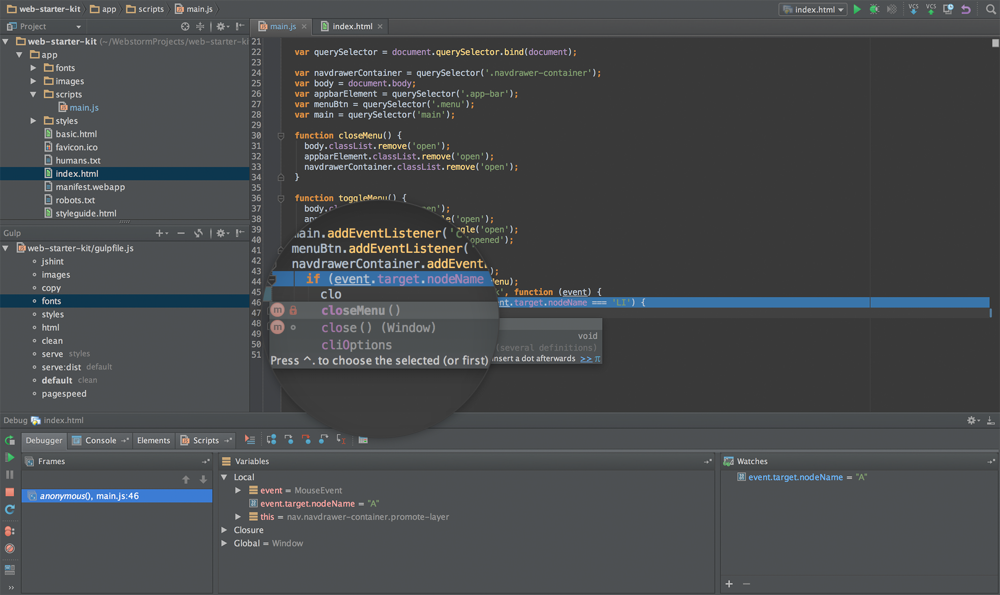

JavaScript
История развития, способы запуска, обзор IDE
Жигалов Сергей.
Разработчик интерфейсов.
Java
- написать код
- скомпилировать
- упаковать в апплет
- подключить
Брэндон Айк
разработал JavaScript для Netscape
JavaScript
- написать код
- скомпилировать
- упаковать в апплет
- подключить
- Синтаксис → C, C++, Java
- Наследование через прототипы → Self
- Динамическая типизация → Perl
- Ссылки на функции → Lisp
LiveScript
JavaScript
Брэндон Айк
... JS был обязан «выглядеть как Java», только поменьше, быть эдаким младшим братом-простаком для Java...
Брэндон Айк
... Кроме того, он должен был быть написан за 10 дней, а иначе мы бы имели что-то похуже JS... В то время мы должны были двигаться очень быстро, т.к. знали, что Microsoft идет за нами...
Внедрение
| v2.0 | JavaScript | |
| v3 | JScript |
ECMAScript
Диалекты
| JavaScript | Netscape |
| ActionScript | Flash |
| JScript | Internet Explorer |
JSON
(JavaScript Object Notation)
Дуглас Крокфорд, 2001
{
"first": "John",
"last": "Doe",
"married": true,
"born": 1890,
"friends": [ "Tarzan", "Cheeta" ]
}
JSON
(JavaScript Object Notation)
Дуглас Крокфорд, 2001
John
Doe
true
1890
Tarzan
Cheeta
AJAX
(Asynchronous JavaScript and XML)
Джеймс Гаррет, 2005

ECMA
| ECMAScript | 1997 |
| ECMAScript 2 | 1998 |
| ECMAScript 3 | 1999 |
| ECMAScript 5 | 2009 |
| ECMAScript 6 (ES2015) | 2015 |
| ECMAScript 7 | ? |
Основы языка
Типы данных*
* - подробнее об этом в следующей серии лекции
Числовой
123 // 123
12.3 // 12.3
0x11 // 17
0b11 // 3
0o11 // 9
Строковый
'строка текста'
"строка текста"
'中文 español русский \' '
'«JavaScript — это простой, но ' +
'изящный язык, который является ' +
'невероятно мощным для решения ' +
'многих задач» © Джон Резиг'
Логический
true
false
Hеопределенное значение
var a;
console.log(a); // undefined
Основы языка
Переменные
Переменные
var studentsCount;
studentsCount = 98;
var studentsCount = 98;
var studentsCount = 98,
language = 'JavaScript';
Именование переменных
oneMoment A-z _ $1moment
soSo A-z 0-9 _ $so-so
Именование переменных
var currentTime;
var MILLISECONDS_IN_DAY;
Зарезервированные слова
break do try while
case else new with
catch finally return
continue for switch
debugger function this
default if throw
delete in instanceof
typeof var void
Зарезервированные слова
class enum extends super
const export import
Комментарии
// это короткий комментарий
/* а это длинный комментарий
написаный в несколько строк */
Основы языка
Операторы(*) (**)
(*) - подробнее об этом в следующих лекциях
(**) - операторы перечислены по убыванию приоритета
Унарные
++ (инкремент)
-- (декремент)
- (унарный минус)
! (логическое НЕ)
Инкремент
var a = 1;
var b = a++; // b === 1, a === 2
var a = 1;
var b = ++a; // b === 2, a === 2
Бинарные
Арифметические
* (умножение)
/ (деление)
% (остаток от деления)
+ (сложение)
- (вычитание)
+ (сложение строк)
Сравнения
< (меньше)
<= (меньше или равно)
> (больше)
>= (больше или равно)
== (проверка на равенство)
!= (проверка на неравенство)
=== (проверка на идентичность)
!== (проверка на неидентичность)
Логические
& (побитовое И)
| (побитовое ИЛИ)
&& (И)
|| (ИЛИ)
Присваиваивание
= (присваивание)
*= /=, +=, -=, &=, ^=, |=
(присваивание с операцией)
var a = 1;
a += 1;
a = a + 1;
Условные операторы
if (language === 'JavaScript') {
likes = likes + 1;
} else {
likes = likes - 1;
}
likes = language === 'JavaScript' ?
likes + 1 :
likes - 1;
Условные операторы
switch (language) {
case 'JavaScript':
likes++;
break;
case 'C++':
case 'Java':
break;
default:
likes--;
}
Statement
a = b * 2;
Expression
a = b * 2;
// 2 - это выражение литерала
// b - это выражение переменной
// b * 2 - это арифметическое выражение
// a = b * 2 - это выражение присвоения
;
function getTrue() {
return true;
}
getTrue(); // true
;
function getTrue() {
return
true;
}
getTrue(); // undefined
Основы языка
Строгий режим
Строгий режим
'use strict';
// этот код будет работать
// по современному стандарту ES5
Зарезервированные слова
implements let private
interface package protected
public yield static
Строгий режим
Пуск!
Пример запуска
console.log('Hello, world!');
В браузере
console.log('Hello, world!');
https://nodejs.org
NodeJS
// index.js
console.log('Hello, world!');
$ node index.js
Редакторы кода
WebStorm
Лицензия для WebStorm
- завести JetBrains Account
- подтвердить статус студента:
- при помощи карточки ISIC
- при электронной почты университета (в домене .edu)
- при помощи скана студенческого билета
Подать заявку можно здесь
GitHub
"Три уровня дзена"
guide
https://github.com/urfu-2015/guides/blob/master/how-to-pull-request.md
Регистрация
регистрируемся по ссылке http://github.com/join

входим по ссылке http://github.com/login

Web
Форк


Редактирование


Коммит

Создаём pull request

Создаём pull request

Создаём pull request

Приложение
windows
Форк
Скачиваем приложение
https://desktop.github.com/

Устанавливаем. Вводим логин и пароль

Вводим полное имя и электронную почту

Клонируем репозиторий с задачей

Выбираем рабочую директорию

Заходим в директорию

Решаем задачу

Коммит

Сообщение

Отправить решение

Готово!

git shell
windows
linux
Уже все есть
Форк
# Клонируем репозиторий
git clone https://github.com/gogoleff/
verstka-tasks-1.git
# Заходим в созданную папку с клоном
cd verstka-tasks-1
# Решаем задачу в любимом редакторе...
# Добавляем все измененные файлы через пробел
git add index.html
# Коммитим (утверждаем изменения)
git commit -m "Моё решение задачи"
# Отправляем изменения в удалённый репозиторий
git push origin master
Если нужны правки
# Добавляем все измененные файлы через пробел
git add index.html
# Коммитим (утверждаем изменения)
git commit -m "Моё решение задачи"
# Отправляем изменения в удалённый репозиторий
git push origin master
Создаём pull request
Создаём pull request
Создаём pull request